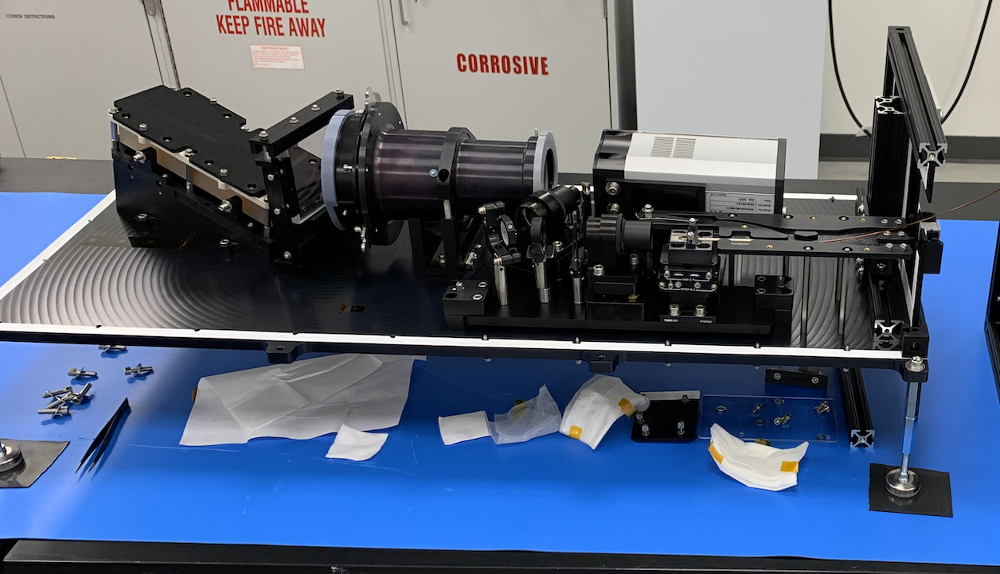
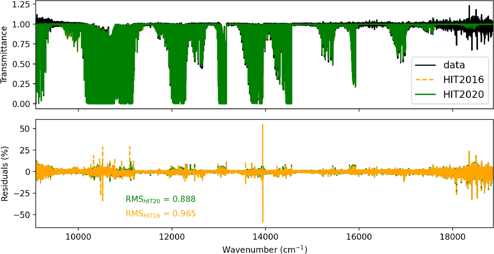
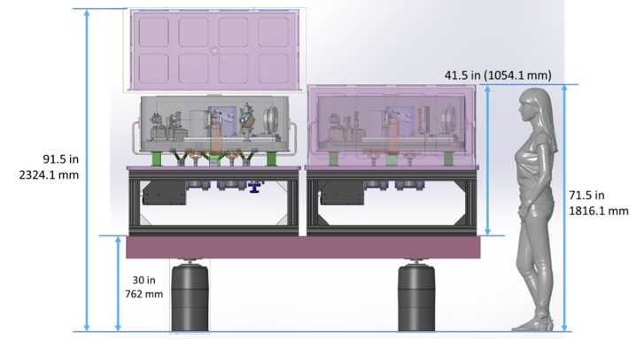
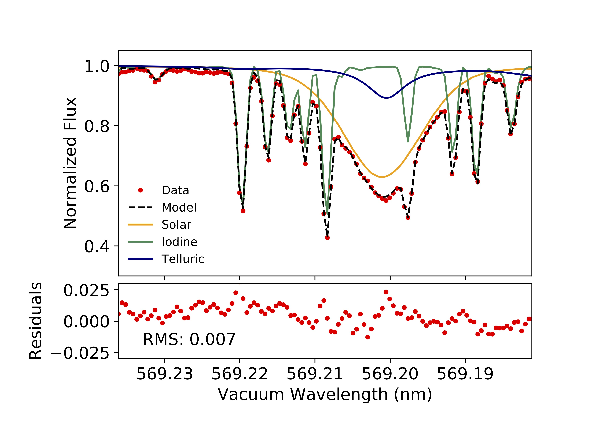
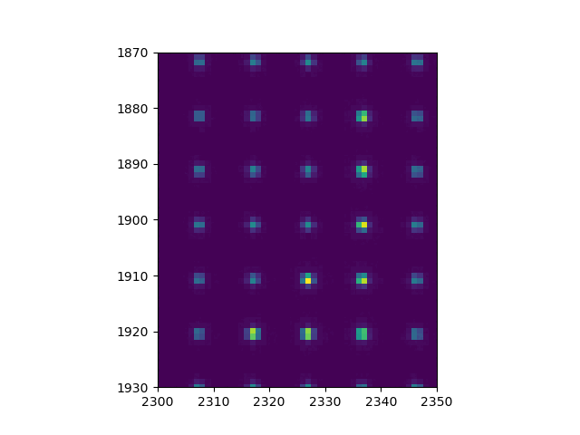
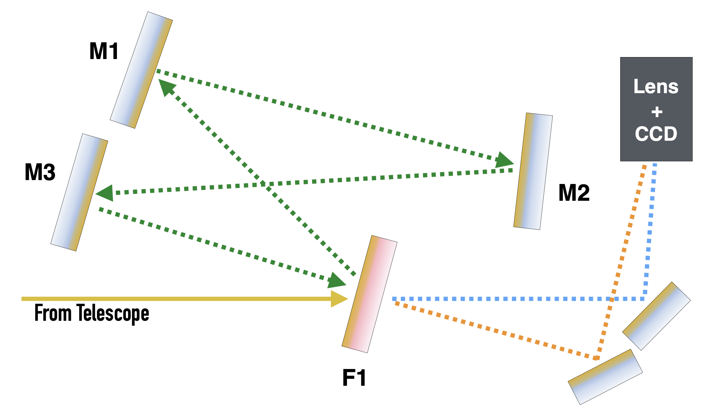

My research focuses on designing and building instruments that characterize exoplanetary systems.
I am currently staff at Caltech working in the Caltech Optical Observatories (COO) group in the astronomy department at Caltech. I was previously a 51 Pegasi b Postdoctoral Fellow in the same department. I am a member of the Keck Planet Finder (KPF) and HISPEC teams working on instrumentation for Keck and Palomar Observatories.
Recent and Ongoing Work

Stellar Activity Monitoring for KPF
I am the lead on the optical design and alignment of a spectrograph that will observe simultaneously with the Keck Planet Finder (KPF). KPF is a next-generation spectrograph for discovering and characterizing the masses of rocky exoplanets that will be deployed at Keck in fall of 2022. The separate R~14,000 H&K spectrometer is a double pass, cross dispered echelle spectrograph that will observe the Ca H&K stellar absorption lines to monitor stellar activity, which will be the limiting noise source for many of KPF's exoplanet mass measurements.

Telluric Modeling
I have been using the Planetary Spectrum Generator to model telluric lines in an effort to validate HITRAN line lists and demonstrate an improvement in the HITRAN 2020 optical water vapor absorption parameters. A Python wrapper for running the PSG API to acquire telluric spectra based on the time and location of an astronomical observation is available on my Github.
HITRAN 2020 (Gourdon et al. 2021)
PSG Wrapper Github Page

HISPEC Simulations
I am the instrument scientist for the HISPEC spectrograph expected to be deployed on the Keck II telescope in 2026. HISPEC is currently in the detailed design phase and has a range of science goals including direct spectroscopy of exoplanets, science of faint dwarfs, and radial velocity (RV) measurements of exoplanets. The RV science case drives HISPEC's stability requirements and work was done to develop an RV error budget for the instrument. Some details on that can be found here.
HISPEC's RV Error Budget Poster (EPRV 5)

Telluric Correction of Stellar FTS Spectra
I developed a semi-empirical method for correcting tellurics in high SNR, R~106 Solar spectra to create a new Solar atlas from 0.5-1um. The atlas along with the extracted telluric spectra are available for download. This model avoids molecular line list errors and can be useful for RV spectra well-sampled in airmass, and works well even when barycentric motion is poorly sampled.
Solar & Telluric Atlas Zenodo Page
Baker et al. 2020

Detector Characterization
KPF has two detectors that are 16Mpx CCDs. The setting of their operating points and their characterization is being performed at Caltech. I am the lead of the analysis of the detector characterization data to ensure the detectors are ready for precise RV measurements. Subpixel spot scans are also being performed to measure the intrapixel senstivities using the JPL spot projection laboratory.

The Oxyometer: High resolution imaging for studying exoplanet atmosphere
Using a Fabry-Perot filter, I developed an instrument that allows for simultaneous narrowband imaging over two adjecent ~0.3nm filter bands. The instrument worked well on-sky and provides a high throughput, low systematics instrument for detection of strong bandheads or absorption features in exoplanet atmospheres through transmission spectroscopy. Although detection of O2 in Earth-like planets using such an instrumentwould require large apertures in space and be limited to M dwarf host stars, I am exploring the application of this instrument to the detection of alkali metals in hot Jupiter atmospheres.
Baker+2019
Get In Touch
-
Email
abaker [at] caltech.edu
-
Address
Cahill Center for Astronomy & Astrophysics
1216 East California Boulevard
Pasadena, CA 91125
{kind=link}
{kind=link}
{kind=link}
{kind=link}
{kind=link}
{kind=link}